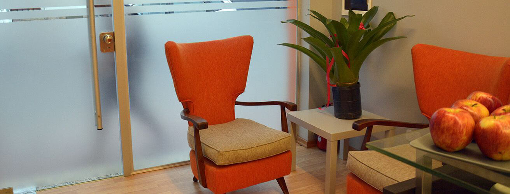
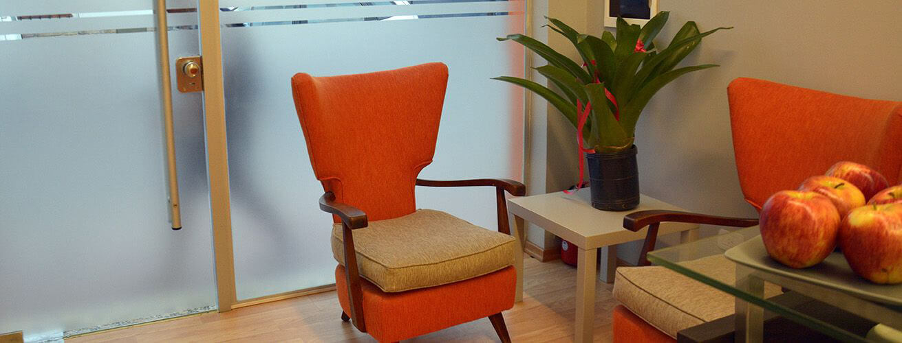
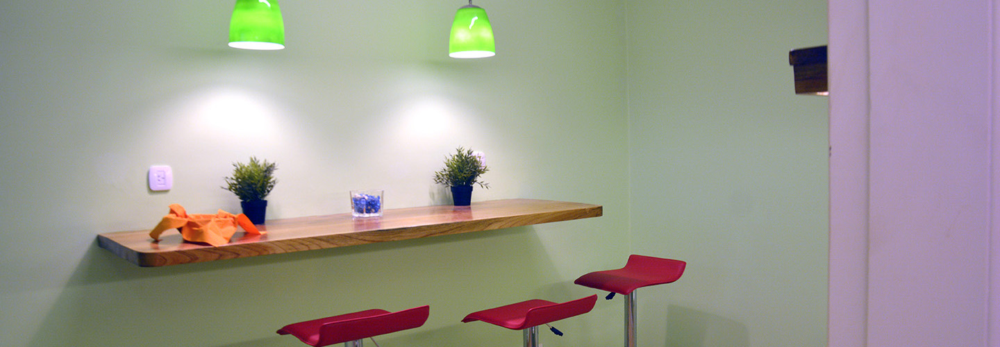
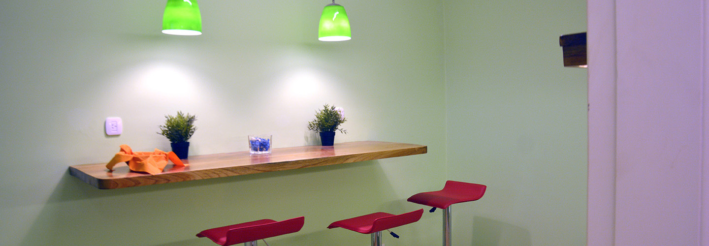

Ahora tenés en Salta un nuevo lugar de trabajo, donde podrás cultivar tu creatividad,
compartiendo ideas y conocimientos, o simplemente trabajando en tus proyectos en un
entorno cómodo, agradable, espacioso y con horarios flexibles.
¡Sumate! Nuestra propuesta es una alternativa rentable y práctica al tradicional alquiler de
oficinas. Ahora no necesitás invertir en equipamiento: te brindamos infraestructura y
servicios adecuados, a un precio razonable.
CF COWORKING SLA está pensado para emprendedores, profesionales autónomos,
freelancers que desarrollan sus actividades y mantienen reuniones con socios o clientes.
También tenemos un espacio a medida de las empresas y zonas para capacitación.

 


 
